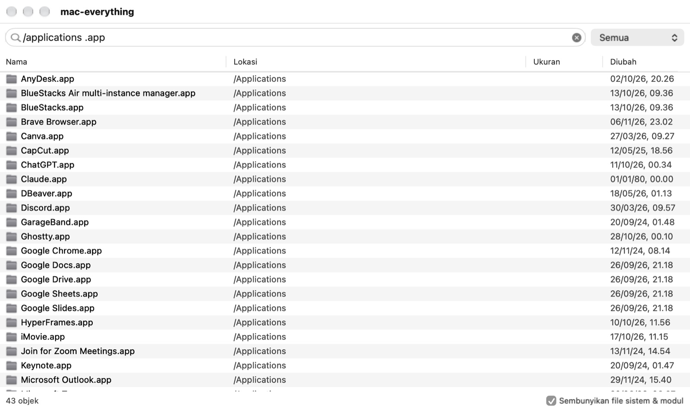

Everything
Cari file apa pun di Mac berdasarkan namanya. Hasil muncul selagi Anda mengetik.

Pencarian bawaan kadang tidak sat set.
Spotlight mencari di mana-mana sekaligus: isi dokumen, email, kontak, sampai saran dari web. Itu berguna untuk banyak hal. Tapi saat Anda cuma ingat nama filenya, file itu kadang tenggelam di antara hasil lain, atau baru muncul setelah jeda.
mac-everything mengerjakan satu hal saja: mencocokkan nama file. Ketik beberapa huruf, daftarnya langsung menyusut ke file yang Anda cari. Tanpa menunggu, tanpa hasil yang tidak diminta.
Kenapa cepat
Hanya nama file
Yang diindeks cuma nama, bukan isi. Seluruh indeks muat di memori dan dipindai paralel di semua inti CPU.
Selalu terkini
Perubahan di disk dipantau terus-menerus. File yang baru dibuat, dipindah, atau dihapus langsung tercermin di hasil.
Langsung siap
Indeks disimpan ke disk, jadi saat aplikasi dibuka lagi Anda bisa langsung mencari tanpa menunggu.
Cara mencari
laporan pdf | Spasi berarti DAN: nama harus memuat kedua kata. |
laporan !draf | Tanda seru mengecualikan: memuat “laporan” tetapi tidak “draf”. |
kantor/laporan | Garis miring mencocokkan seluruh path, bukan hanya nama file. |
Cara memasang
- Unduh dan buka file DMG
Klik dua kali
mac-everything.dmgyang baru diunduh. - Seret ke Applications
Seret ikon mac-everything ke folder Applications di jendela yang muncul.
- Izinkan saat pertama dibuka
Aplikasi ini belum dinotarisasi Apple, jadi macOS akan menahannya. Buka System Settings → Privacy & Security, lalu klik “Open Anyway”. Cukup sekali.